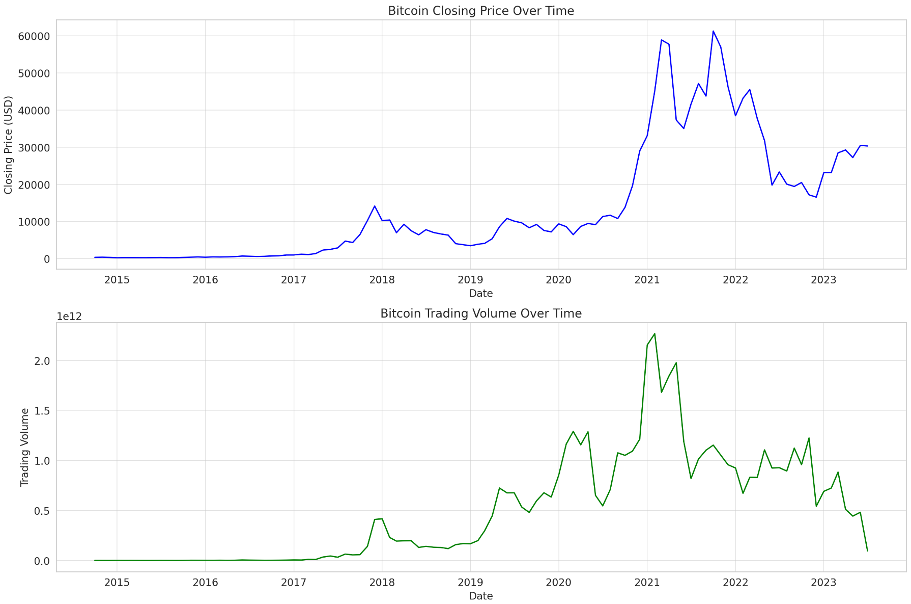

Bitcoin, the world's first cryptocurrency, has experienced significant volatility since its inception in 2009. Our analysis provides a detailed look at Bitcoin's price trajectory from October 2014 to 2023, highlighting the market trends and the impact of global events on Bitcoin's value.
Bitcoin's Remarkable Growth: A key period of Bitcoin's price surge occurred from early 2017 until the end of 2018. This trend coincided with an increased mainstream acceptance of Bitcoin and digital currencies. Numerous businesses started to accept Bitcoin as a valid form of payment and governments worldwide began to discuss its potential economic impact.
Peak Bitcoin Interest Amid the Pandemic: The most significant peak in Bitcoin's price happened around the end of 2021, during the COVID-19 pandemic. This trend demonstrates the global shift towards digital solutions and the growing trust in blockchain technology amid the health crisis.
Bitcoin's Volatility and Regulatory Challenges: Despite its significant growth, Bitcoin's price has experienced periods of rapid decline, reflecting the market's uncertainty and the regulatory challenges surrounding digital currencies. Bitcoin's volatile price trajectory is a clear indication of the ongoing debates about its stability, value, and role in the global economy.
Predictive Patterns in Bitcoin's Price Changes: We'll examine autocorrelation and partial autocorrelation in the data to identify any patterns that might exist over time lags. Autocorrelation measures the relationship between a variable's current value and its past values, while partial autocorrelation isolates the correlation at a specific lag, removing the influence of intermediary lags.
Before conducting this analysis, let's first confirm that the data is stationary, as this is a requirement for these statistical methods. We can do this using the Augmented Dickey-Fuller test.
The Augmented Dickey-Fuller test returns a p-value of approximately 0.59. The Bitcoin closing price data appears to be non-stationary, meaning it has a time-dependent structure.
To handle non-stationarity, we often difference the data, i.e., calculate the change in price from one period to the next. Let's create a differenced series and test it for stationarity. If it is stationary, we can proceed with the autocorrelation and partial autocorrelation analysis.
The p-value for the Augmented Dickey-Fuller test on the differenced series is approximately 1.19e-11. The differenced series appears to be stationary, meaning it does not have a time-dependent structure.
Now that we have a stationary series, let's proceed with the autocorrelation and partial autocorrelation analysis. This will help us understand if there are any significant correlations between the Bitcoin price at a given time and its prices at previous time points. This type of analysis can be useful for time series forecasting.

The green shaded area in the plots represents the confidence intervals (the range within which we'd expect the true autocorrelation to fall, assuming the null hypothesis that the true autocorrelation is zero).
From the Autocorrelation Plot, we can see that the autocorrelation for the first few lags is outside the confidence interval, indicating significant autocorrelation at these lags. This suggests that the price changes in Bitcoin from month to month are not completely random, but rather, they are somewhat influenced by the changes in the previous months. The Partial Autocorrelation Plot shows significant partial autocorrelation at the first few lags, similar to the autocorrelation plot. This means that there is significant correlation between the Bitcoin price change in a given month and the price changes in the previous few months, after removing the influence of the price changes in the intermediary months. These findings suggest that there may be some predictable patterns in the Bitcoin price changes over time, even though the overall trend is highly volatile. Understanding these patterns can be valuable for forecasting future price movements.
Our autocorrelation and partial autocorrelation analysis of Bitcoin's monthly price changes suggest the presence of significant correlations with past price changes. These findings hint at potential predictive patterns in Bitcoin's price, although forecasting with high accuracy remains a challenge due to the currency's volatility and the influence of external factors.
Conclusion: Bitcoin's Role in the Digital Economy: Bitcoin's journey from 2014 to 2023 reflects its increasing acceptance and interest as a leading cryptocurrency. As digital currencies continue to evolve, influenced by technological advancements, regulatory decisions, and shifts in public sentiment, Bitcoin's role and impact on the global economy will undoubtedly remain a topic of interest.